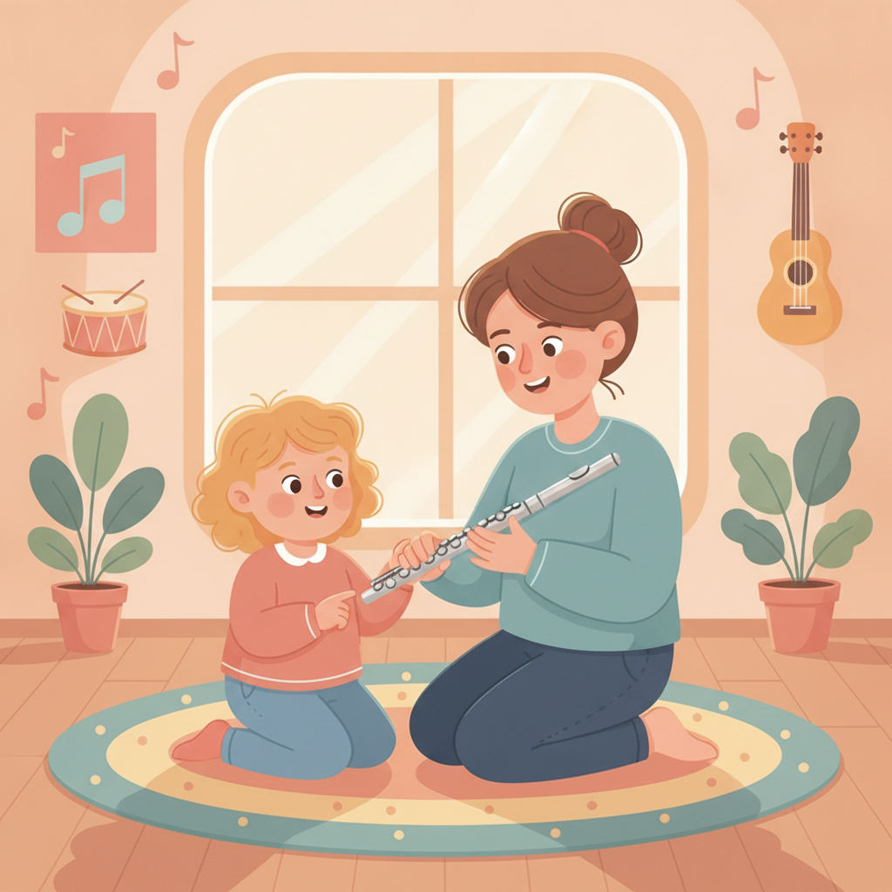
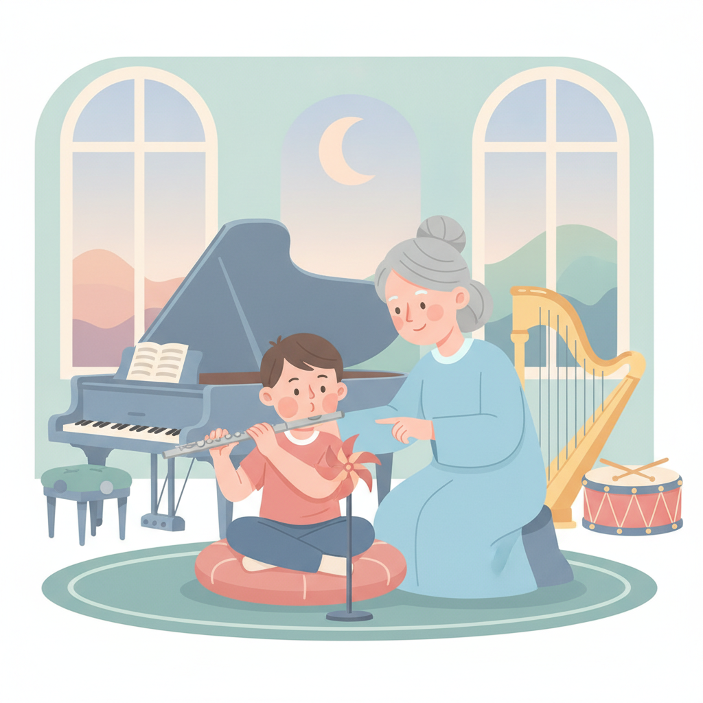
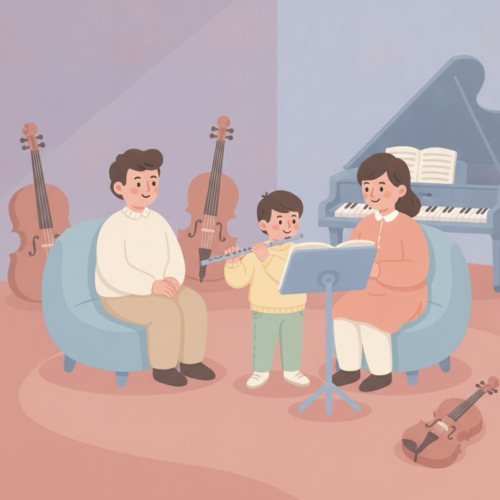

在台北幫孩子找長笛老師，這 5 件事比學歷重要
互動、距離、氣息、旁聽、檢定——挑老師之前，先把這五件事看清楚。
挑長笛老師，最該看的其實不是學歷，是這個老師能不能讓你的孩子上得下去。
具體有五件事：觀察老師和孩子的互動、離家的距離、老師怎麼教氣息、家長能不能旁聽，還有打算考檢定的話，老師實際帶過幾個。學歷當然有用，但它排在這五件事後面。

打開 Google 搜「台北 長笛老師」，跳出一長串名字。音樂系畢業、得過獎、教學經驗豐富——每一個看起來都很好。
看完之後，你反而更不知道要選誰了。
我懂。名單很長，判斷標準卻很少。
通常會走到這一步，是因為孩子某天突然開口說他想學長笛。也許是在學校的音樂課上聽到的，也許是哪支影片裡飄出來的聲音，總之他記住了，然後跑來跟你說。
那你要做的第一件事，其實不是買一支長笛。這點我另外寫過，可以先看初學要準備什麼——先租、先借都行，等孩子的興趣撐過前幾個月再說。
先幫孩子找到對的老師。找對了人，後面那些都可以慢慢來。
重點一：觀察老師和孩子的互動氛圍
很多家長問我的第一句話是「一期幾堂、多少錢」。我通常會先擋一下——那是後面的事。
先上一堂看看。真的，就一堂，不會怎麼樣的。
孩子跟老師合不合，不是看資歷表能看出來的，得讓他們待在同一個空間裡四十分鐘才知道。而且一個願意讓你先試一堂的老師，本身就透露了訊息：他有把握，也不急著把你綁住。
試上那天，你可以順便觀察這幾件事：
- 老師有沒有先問孩子問題，而不是一開場就介紹自己。
- 孩子走出教室的時候，是累的，還是眼睛亮的。
- 老師有沒有告訴你他打算怎麼開始，而不是只回一句「沒問題」。
這三件事，比任何介紹都準。
重點二：老師離家近不近，比你想的更重要
找到合得來的老師之後，接著要看的是一件很不浪漫的事：離家的距離。
我知道，談孩子學音樂談到最後在算接送時間，聽起來很煞風景。
但你算算看。一週一次，一次來回可能要一小時，這件事要走兩年、三年。頭三個月大家都很有熱情，撐得住；真正會磨掉一個孩子學音樂熱情的，往往不是課本身，是那段路。
我看過太多次了。課上得好好的，最後停下來的理由是「最近實在跑不動」。
當然，也真的有值得跑遠一點的老師——如果那個人特別適合你的孩子，多花二十分鐘是值得的。每個家庭的狀況不一樣，這點你比我清楚。
只是請你在決定之前，把接送這件事先算進去：誰接、幾點、下課之後還要不要趕晚餐。捷運沿線、或者接送動線順的地方，能省下的力氣比你想像的多。這些現實條件撐不撐得住，比老師的頭銜更早決定結果。
重點三：問問老師，怎麼教長笛的「氣息」
如果五件事裡只能問一件，我會請你問這個。
長笛跟鋼琴很不一樣。鋼琴按下去就有聲音，長笛不是——它得先有一道穩定的氣，聲音才站得起來。孩子剛開始最常遇到的挫折，不是手指按不到，是吹了半天只有風聲。
所以一個長笛老師怎麼處理「氣」，幾乎決定了孩子前三個月會不會放棄。
你可以直接問：孩子一開始吹不出聲音，你都怎麼帶？
會教的老師，答案通常很具體。他會講怎麼先不裝笛頭以外的部分、怎麼用吹瓶口的方式找到那個角度、怎麼讓孩子感覺到氣從哪裡出來。他也會提到嘴型和呼吸要分開練，不會混在一起講。
答得含糊的，多半是「多練就會了」。那句話沒有錯，但它不是教法。

重點四：家長能不能旁聽？課後有沒有回饋？
這題很多家長不好意思問，怕顯得不信任老師。但它其實很重要。
孩子回家要練的是課堂上那四十分鐘的東西。如果你完全不知道課裡發生了什麼，回家想幫忙也使不上力，最後只剩下一句「你去練長笛」。那句話幫不了他。
所以我會建議你確認三件事：
- 老師願不願意讓你在後面坐著，或至少偶爾旁聽一次。
- 課後有沒有一兩句話，告訴你這週要練什麼、哪裡要注意。
- 你提問的時候，老師是真的回答，還是打太極。
不必每堂都坐在那裡。你只要知道孩子現在走到哪裡、這禮拜該練什麼，回家就幫得上忙了。

重點五：打算考檢定，就問老師實際帶過幾個
先說清楚：檢定不是必要的。孩子練得開心、也一直在進步，不考完全沒問題。
但如果你確實想讓孩子有個階段性目標，那這題就要問。
帶過檢定的老師，會知道很多在課本上看不到的事——各級的曲目怎麼配才不會太趕、音階和視奏要提前多久開始練、考場當天孩子容易在哪裡卡住。這些是經驗，不是資歷。
問法很簡單：這幾年你帶過幾個孩子考？大概都考到第幾級？
答得出來的，通常就是真的一路陪孩子走過那一段的人。
如果你也想看看我這邊的紀錄，首頁有一區檢定與獲獎紀錄，歡迎參考。
那，第一堂長笛課會發生什麼？
講了五件事，你可能還是有點緊張。畢竟要帶孩子去見一個陌生人。
其實第一堂通常很輕鬆。我會先跟孩子聊幾句，問他為什麼想學長笛、在哪裡聽到的，然後讓他把笛頭拿起來試著吹吹看。多數孩子第一次都吹不出來，那很正常，我們會一起找那個角度。
吹出第一個聲音的時候，孩子的表情會告訴你答案。那個反應騙不了人。
看完這五件事，你心裡大概已經有個底了。剩下的，就是帶他去試一次。
如果想找個時間讓孩子試試看，用 Line 跟我說一聲就可以，我們先聊聊他的狀況。
常見問題
孩子幾歲可以開始學長笛？
通常建議換完牙、大約八歲以上再開始。這時門牙位置穩定，肺活量也成熟一些，吹出穩定的聲音會比較不吃力。早一點不是不行，只是會比較辛苦。
學長笛一定要先買一支長笛嗎？
不必。入門階段可以先用租的，或先跟老師借用，等孩子的興趣撐過前幾個月、確定想繼續學，再考慮買一支自己的。把錢留到那時候花，比較不會浪費。
長笛課一週上幾次比較好？
初學一週一次就夠了。真正決定進度的不是上課次數，而是課與課之間有沒有拿起來吹。與其一週跑兩趟卻都沒練，不如一週一次、每天在家吹十分鐘。
學長笛一定要考檢定嗎？
不一定。檢定是工具，不是目的。如果孩子需要一個看得見的階段性目標，它很好用；如果他練得開心、也持續在進步，不考也完全沒關係。
快速重點
- 先試上一堂，現場觀察老師和孩子的互動氛圍。
- 距離要撐得住——一週一次、要走上兩三年，接送成本先算進去。
- 問老師怎麼教氣息，這題最能分辨真懂還是含糊。
- 確認家長能不能旁聽、課後有沒有回饋。
- 打算考檢定的話，直接問老師實際帶過幾個。